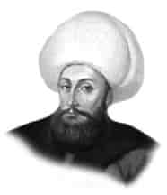

IV. MUSTAFA
Annesi : Ayşe Saniye Perver Sultan
Doğumu : 8 Eylül 1779
Vefatı : 16 Kasım 1808
Saltanatı : 1807 - 1808 (1 yıl)
IV. Mustafa, İstanbul’da doğdu. Yetişmesi ile annesi meşgul oldu. İyi bir tahsil yaptırdı. Diğer padişahlar gibi o da hattatlığa çalıştı. Gayet güzel yazıları vardır. Osmanoğul-ları içinde V. Murat’tan sonra en az padişahlık yapanlardan birisidir.
Kabakçı Mustafa, III. Selim’in yenileşme hareketlerine karşı koyup mani olmak maksadı ile III. Selim’in de merhametinden istifade edince, III. Selim’i tahttan indirmişti.
Bunun üzerine asiler tarafından IV. Mustafa padişah yapıldı. Asiler pek çok mühim mevkileri ellerine geçirdiler. III. Selim tarafından kurulmuş olan Nizam-ı Cedid’in ileri gelenleri Ruscuk’ta bulunan Alemdar Mustafa Paşa’nın yanında toplandılar. Alemdar Mustafa Paşa büyük bir kuvvet halinde İstanbul’a gelerek asileri temizledi ki, III. Selim’in şehit edildiği öğrenildi. Bunun üzerine II. Mahmut’u tahta çıkardı. IV. Mustafa zamanında Ruslarla savaşa devam edildi.
IV. Mustafa bir yıl iki ay saltanatta kaldı. II. Mahmut tahta çıkınca Topkapı Sarayı’nın bir dairesinde oturmaya mecbur edildi. Bazı kimselerin II. Mahmut’u indirip, IV. Mustafa’yı tahta çıkarmayı tasarlamaları üzerine, ulemadan fetva alınarak öldürüldü. Cenazesi babası I. Abdülhamit’in Bahçekapısı’daki türbesine defnedildi.
Emine Sultan isminde bir kız çocuğu vardı.